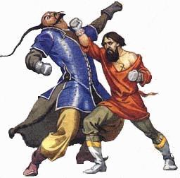

|
||||||||||||||
Кулачные традиции Новгорода На основании рассказов внука И. А. Корягова, А. А. Корягова. Как по всей Руси, в Нижегородской губернии, практически до "Хрущевской оттепели" сохранялась традиция кулачных боев во время народных гуляний в праздничные дни. Престольные праздники собирали на службу в сельский храм большое количество народа из деревень прихода и окрестных сел. Часто, после праздничных богослужений, на центральной площади устраивались ярмарки, которые украшали своими выступлениями самодеятельные народные музыканты и певцы, конечно на гуляньях во время ярмарки проводили различные состязания на ловкость, быстроту и силу. На особом же почетном месте среди развлечений престольного дня стояли состязания бойцов кулачников. В нашей местности они назывались дральческие бои. Ради участия в этих состязаниях на праздники приезжали именитые дральщики из дальних сел, и даже из других уездов, а в советское время - районов. Известен случай, когда записным бойцом дральщиком была женщина. В каждом селе и деревне было специально отведенное место для проведения поединков - дральческий сарай. Иногда это была просто площадка, огороженная плетнём или частоколом, иногда крытый двор, но тоже с отведенным местом для боя. Крытые сараи в основном были в селах, где престольные праздники приходились на осенний период: Покров, Введение, Воздвижение, Дмитрия Солунского, Михаила Архангела и т.д. Перед боем "полюбовно", метали жребий - кому первому ударять. Затем по очереди наносили друг другу удары, пока кто не сдастся. Однако не редким явлением было и окончание боя с первого удара. Неписанными, но очень четко оговоренными правилами, запрещалось ударять в лицо, под душу (в солнечное сплетение), в пах, и, если выходила в поединок женщина, то ей не били также в грудь. Один из самых популярных первых ударов - в плечо сильной руки противника. Бойцы все знали друг друга и учитывали кто соперник - правша или левша. И если повезло со жребием, то "первенца" наносили по той руке другого поединщика, которой он мог бы сам нанести сокрушительный удар. От удачного удара руку могло "прострелить" она на время выходила из строя. В памяти стариков - выходцев из сел границы Бутурлинского и Перевозского районов Нижегородской области - до сих пор хранится случай, как в самом начале ХХ в. на дральческом бою в день Казанской иконы Божией Матери в селе Большие Кемары, один из бойцов потерял руку. Причем сокрушительный удар сопернику нанесла, участвовавшая в боях женщина, которая специально ездила из Княгинина по таким состязаниям. Местный житель отказался от права бросать жребий, посмеявшись, что мол "еще с бабой я жребий не тягал, пусть первая бьет". Этот крестьянин был известным дральщиком и соперница знала, что он левак (левша), потому и жахнула ему по плечевому суставу левой руки своей ударной правой. От удара рука противника оторвалась в суставе и повисла на плече, держась лишь на коже и сухожилиях. Кроме ударов по плечам и рукам популярны были удары в грудь, сбоку по ребрам, сбоку в живот и даже по бедрам. Тот кто принимал удар, не имел права уклоняться, отступать, сбрасывать удар или защищаться руками. Руки опускались вдоль туловища. Тело напрягалось. Говорили: "стоит попом", т.е. как священник в торжественные моменты службы, не переступив, не шелохнувшись. Бьющий же мог использовать определенные хитрости: показать замах с правой, а "вдарить" с левой или наоборот, показать что замахиваешься на грудь или плечо, а ударить в область почек или печени. Можно было бить классическим ударом кулаком, и молотковым, причем молотковые удары могли быть нанесены как нижней (ребра ладони), так и верхней (у большого пальца) стороной кулака. На каждый бой дральщики, выходящие биться, сами выбирали себе из присутствовавших судью, того, кому оба доверяли. Судья давал команду к началу боя и следил, что бы бьющий не наносил запрещенных ударов. Если же у кого-то из соперников проходил удар, применение которого исключали правила, то нарушитель подвергался общему осуждению и позору на долгое время. Длительный срок он не имел права участвовать в боях. Потом должен был каяться перед собратьями, и артель дральщиков выносила ему приговор: или принять его раскаяние и допускать до состязаний, или исключить навсегда. Перед началом боя кулачники сбрасывали друг перед другом боевые рукавицы, молились, кланялись друг другу, тянули или бросали жребий, затем снова надевали рукавицы и по команде судьи: "Господи, благослови", или "С Богом" начинали битву. Кроме кулачных боев как праздничных развлечений, бои "на раз" рассматривались и как судные. Молодые люди могли выйти на "полюбовный" бой именно из - за неразделенной любви, когда решали, кто из них выиграет право ухаживания за девушкой. Бои "на раз" считались особо престижными, но также тяжелыми и даже опасными. Схватка в расхлестку, менее славная и зрелищная, однако была более распространена. Если "полюбовно" дрались на любителя, или в каких-то особых обстоятельствах на Божий суд, то через "петушиные" бои проходили поголовно все мальчишки и мужчины. Как и повсеместно, первыми начинали самые юные дральщики. Причем в дральческий сарай на площадку выводил младшего старший мужчина семьи, чаще всего дед внука, но если был жив прадед, то, соответственно, он выполнял эту почетную миссию. Постепенно поднимаясь по возрасту вверх, поединки доходили до касты "мастеров". При схватке "врасхлест", разрешалось свободное передвижение, все уловки и хитрости, если было оговорено, то подсечки, толчки и броски. Так же разрешалась любая защита, уклоны, уходы от удара или снятие. Бились до тех пор, пока один из соперников не будет повержен на землю от ударов. Побежденный вставал и в знак признания превосходства силы противника первым кланялся ему. Врасхлест так же бились стенка на стенку. Интересно то, что даже при большом количестве дерущихся и при превосходстве по количеству какой-либо стороны, строго действовало правило невмешательства третьего. То есть, обе стенки как бы разбивались на пары и в парах бились в расхлест. Пока один не упадет, ни с одной, ни с другой стороны в их действия никто не вмешается, даже если с какой-то стороны есть свободные бойцы. Лежачего не бить, не пинать - самое строгое правило. Нарушитель подвергался жестокому наказанию от своих же односельчан. Упавший, если имел силы встать, то мог вернуться в строй, но, если повергший его занят, то искать или ждать другой пары. Любые дральческие бои, одиночные или стенка на стенку, обязательно заканчивались примирением, что закреплялось общим походом к шинку, или к дому, где была наготовлена брага, там все вместе испивали по чаше, потому прощание всегда было полюбовным, братским и веселым. В дальнейшем, встречаясь где-то в другой обстановке, вчерашние соперники воспринимали уже друг друга как хорошие друзья и братья. Если поселение было крупным, то сельская артель, которая против других сел выходила единым коллективом, во внутренних взаимоотношениях могла разделяться на две части. Так, например в деревне Малые Кимары, крестьяне были в зависимости от двух хозяев Голицыных и Цыдовых. И у них были свои бои "барщина на барщину". Распределение на "барщины", явно сложившееся со времен крепостного права, настолько укоренилось в традициях деревни, что еще в пятидесятые годы ХХ века, все население было Голицынское или Цыдовское. При этом внутри кланов за доблесть считалось насолить выходцу из другой группы. Потому иногда между "барщинами" случались потасовки. В истории села известен случай, который подчеркивал азарт бойца в драке и верность долгу по взаимопомощи. Дед пошел темным осенним вечером кормить скотину в хлеву, с керосиновым или масляным фонарем. В это время забегает внук и кричит: "Дед, наших Голицынские бьют"! Дед, оставив фонарь, побежал пособлять своим. Драка завязалась нешуточная. В это время, видимо, корова, переступая, сшибла фонарь. Загорелась подстилка, потом, весь хлев. Люди подбежали к дерущимся: "Василий, Василий, у тебя мошенник горит!" - какой там - драка идет. Кричат, а дерущиеся не слышат, подойти нельзя - сшибут. Наконец они сами заметили зарево, потому как уже загорелись рядом стоящие хозяйственные постройки трех дворов. Тушили пожар все вместе и Цыдовские и Голицынские. Хороший дральщик на всю жизнь до глубокой старости оставался в селе харизматической фигурой. Ему оказывалось особое почтение, и в след прошедшему по селу кулачнику всегда слышались шепотки восторга и лестных отзывов об его былых победах. Многие бойцы до глубокой старости сохраняли хорошую форму и участвовали в поединках. Одним из известных дральщиков в Казанском приходе с конца IХХ, начала ХХ в был Корягов (или Курягов) Иван Алексеевич. В возрасте 78 лет он оказался приглашенным на свадьбу со стороны невесты. Как часто на свадьбах, между партиями жениха и невесты возник конфликт. Старый кулачник предложил не устраивать своры, а выйти против него любому со стороны жениха "по разам". Ни один из присутствующих не отважился откликнуться на вызов. В судьбе Ивана Алексеевича был трагический момент, который оставил на всю жизнь след в его душе. По молодости ему пришлось выйти на "полюбовный" бой со сверстником, с которым не могли определиться в первенстве ухаживания за нравившейся обоим девушкой. В праздник вышли на поединок, помолясь начали. Ивану выпал жребий бить первому. Он нацелился и с левой ударил по правому боку соперника. Тот упал, не выдержав удара. Бой закончился. На другой день шел мимо пруда, его вчерашний соперник сидит на берегу не шелохнется. "Ты что тут сидишь, Василий"? Тот ответил: "Иван, умираю". "Как умираешь?" "Да ты ж меня убил". На четвертый день парень скончался. Этот эпизод кулачный боец пронес со скорбью через все жизнь. И всегда вспоминал Василия и молился за него. Естественно, все село знало о причине смерти дральщика, но любую травму или даже гибель бойца тогда воспринимали как от Бога. Потому Ивана не осуждали. Смерть в бою или после боя "по благодати". "Если человек возгордился или прогневал чем Бога, то Господь отнимал у него силу в поединке, и по Божьей воле бывало ему это наказание". Крепкая Вера в промысел Божий, помогла бойцу не сломаться, а продолжать выходить в поединках "по разам" и стать на долгие годы одним, а может и последним из лучших кулачных дральческих бойцов по окрестности. |
||||||||||||||